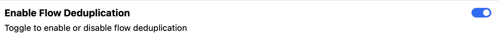
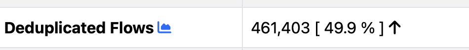

6. Flow Deduplication
Flow deduplication is the process of identifying and removing duplicate flow records that appear in NetFlow/IPFIX data when the same traffic is monitored and exported by multiple observation points (typically network devices) in the network. Without deduplication there are various issues that can arise including:
Inaccurate Traffic Volume: Traffic appears multiplied in reports
Skewed Top-N Statistics: Applications/hosts appear with inflated usage
Billing Errors: Overcharging for bandwidth consumption
Misleading Capacity Planning: Overestimation of traffic patterns
Wasted Storage/Processing: Redundant data consumes resources
Common flows duplication scenarios include:
Router-to-router links: Both interfaces export the same flow
Multiple monitoring points: Core and edge devices see same traffic
Network TAP/SPAN duplication: Mirroring traffic to multiple collectors
High availability designs: Active/standby devices both exporting
Said that flow duplication needs to be avoided, ntopng (Enterprise XL and superior) and nProbe (Enterprise L and superior) implement flow deduplication. In ntopng you can enable it from preferences

and it works only with flow collection (i.e. ZMQ) and not with packet interfaces. The reason is explained below.
When enabled ntopng will discard flows exported from different devices (e.g. router-1 and router-2) with the same flow key (usually VLAN/protocol/IP src/IP dst/port src/port dst). This is an indicator of a deduplication as the same flow has been observed simultaneouly by more than one exporter. You do not need to configure anything other than the prefeence, as ntopng will take care of exporters configuration that can be dynamic (i.e. the traffic topology can change overtime according to network status or backup link activated as necessary).
When enabled, you can monitor deduplication statistics in the interface details page and also visualize a timeseries of deduplicated flows.

Note that:
the overall system performance will be better if you enable deduplication at the nProbe side, as the probe will only export flows that are not duplicated. Instead, discarding duplicated flows on the ntopng side will have a more limited impact as the flow has been exported by nProbe, collected by ntopng and then discarded.
flow deduplication at nProbe side is applied only for exporters sending flows to the same nProbe. This means that if your ntopng instance collects flows via ZMQ from nprobe-instance-1 and nprobe-instance-2, in case the same traffic is observed by both nprobe instances, you also need to enable deduplication at the ntopng side.
Bottom line: as deduplication is not CPU intensive, we suggest you to enable it at the ntopng side and if possible also at the nProbe side for maximum efficiency.